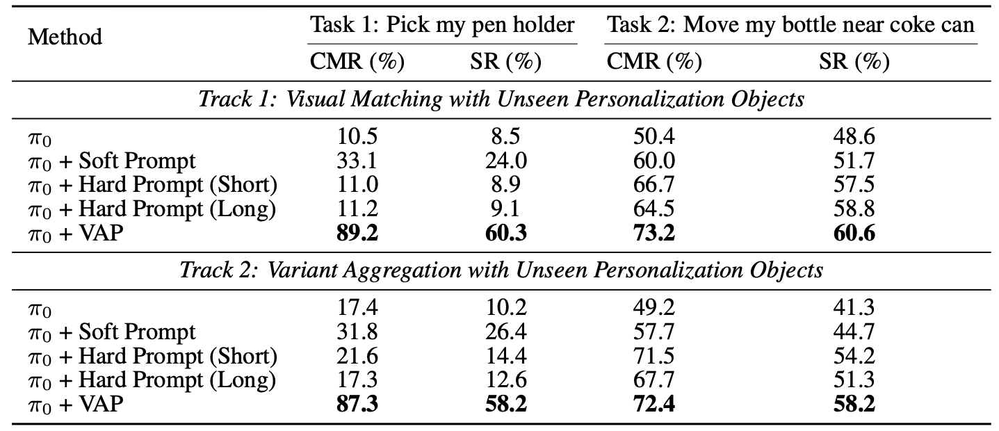
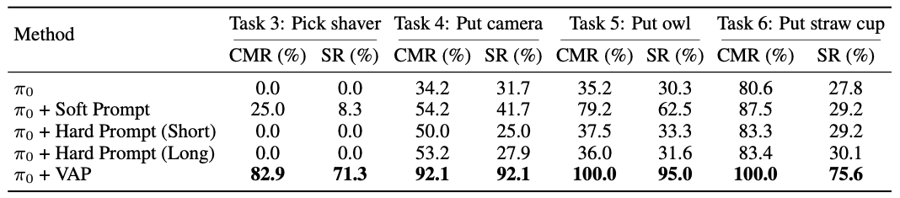
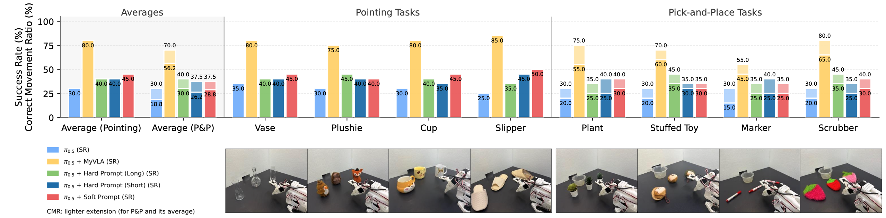

"Put my camera on towel"
Experimental Setup & Benchmarks
We establish three benchmarks to rigorously evaluate instance-level manipulation capabilities. In all settings, the robot must identify a user-specific target (defined by ~5 reference images) among visually similar distractors of the same category.
- Personalized-SIMPLER: Adapted from the SIMPLER simulation benchmark. We evaluate on both Google Robot (Fractal) and WidowX (Bridge) settings, replacing task-relevant objects with high-fidelity 3D assets from Sketchfab.
- Personalized-VLABench: Extends VLABench to multi-view selection tasks (Franka Emika Panda). Requires handling occlusion and consistency across 3 camera views.
- Real-world Benchmark: A physical tabletop setup with a SO-101 arm. Includes 8 everyday categories (e.g., vase, slipper, plushie) with unseen instances collected from the real world.
Quantitative Analysis
Google Robot (Fractal)
Table 2. VAP significantly outperforms generic policies and text-based prompts in both 'Visual Matching' and 'Visual Variant' tracks.
WidowX (Bridge)

Table 3. On the WidowX arm, baselines often fail to identify the correct instance (near-zero success), while VAP achieves high success rates.
Personalized-VLABench
Table 4. Multi-view selection results. VAP achieves the highest Success Rate (SR) across all 5 object categories.
Real-world Performance
Figure 5. Real-world success rates. VAP (yellow) consistently outperforms baselines (blue/green/red) in both pointing and pick-and-place tasks.